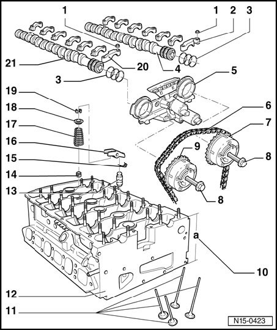
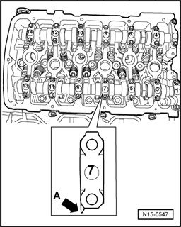
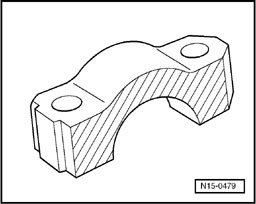

Camshaft, Lifters and Push Rods: Service and Repair
Valvetrain, assembly overview
Valvetrain, assembly overview:

1 - 5 Nm plus an additional 1/8 turn (45°)
2 - Exhaust camshaft bearing cap
^ Installed location
^ Lightly coat contact surfaces of bearing cap 8 with grease G 052 723 A2 before installing
3 - Seal
^ If seal is leaking, replace completely
^ Lightly oil contact surface of sealing rings when installing control housing
^ Do not spread sealing rings excessively when inserting
4 - Exhaust camshaft
^ Checking radial clearance using Plastigage(R), Wear limit: 0.1 mm
^ Run-out: max. 0.01 mm
^ Checking axial play
^ Identification
5 - Control housing
^ Lightly lubricate contact surfaces of oil seals before installing
^ Check control housing strainer for soiling before installation
6 - Camshaft roller chain
^ Mark direction of rotation before removing (installation position)
7 - Exhaust camshaft adjuster
^ Identification: 32A
^ Only rotate engine with camshaft adjuster installed
8 - 60 Nm plus an additional 1/4 turn (90°)
^ Replace
^ Contact surface of wheel sensor must be dry around bolt head when assembling
^ To remove and install, counter-hold with 32 mm open end wrench on camshaft Camshafts, removing and installing, Removing and installing camshafts
9 - Intake camshaft adjuster
^ Identification: 24E
^ Only rotate engine with camshaft adjuster installed
10 - Cylinder head height
^ Minimum height: a = 139.9 mm
11 -Valves
^ Do not rework, only lapping is permitted
^ Valve dimensions
12 - Cylinder head
^ Check for distortion
^ After replacing replace entire amount of coolant
13 - Support element
^ Before installing, check axial play in camshafts
^ Do not interchange
^ With hydraulic valve clearance compensation
14 - Valve stem seal
^ Replace
15 - Securing clip
^ Check for secure seat
16 - Roller rocker lever
^ Before installing, check axial play in camshafts
^ Do not interchange
^ Check roller for easy movement
^ Lubricate contact surface
^ Use securing clip to clip onto support element when installing
17 - Valve spring
^ Note installation position
18 - Valve spring plate
19 - Valve keepers
20 - Intake camshaft bearing cap
^ Installed location
^ Lightly coat contact surfaces of bearing cap 7 with grease G 052 723 A2 before installing
21 - Intake camshaft
^ Checking radial clearance using Plastigage(R), Wear limit: 0.1 mm
^ Run-out: max. 0.01 mm

Installed position of camshaft bearing caps
Points of bearing caps - arrow A - of intake and exhaust camshaft point outward.

Lightly coat contact surfaces of bearing caps 7 and 8 with grease G 052 723 A2 before installing